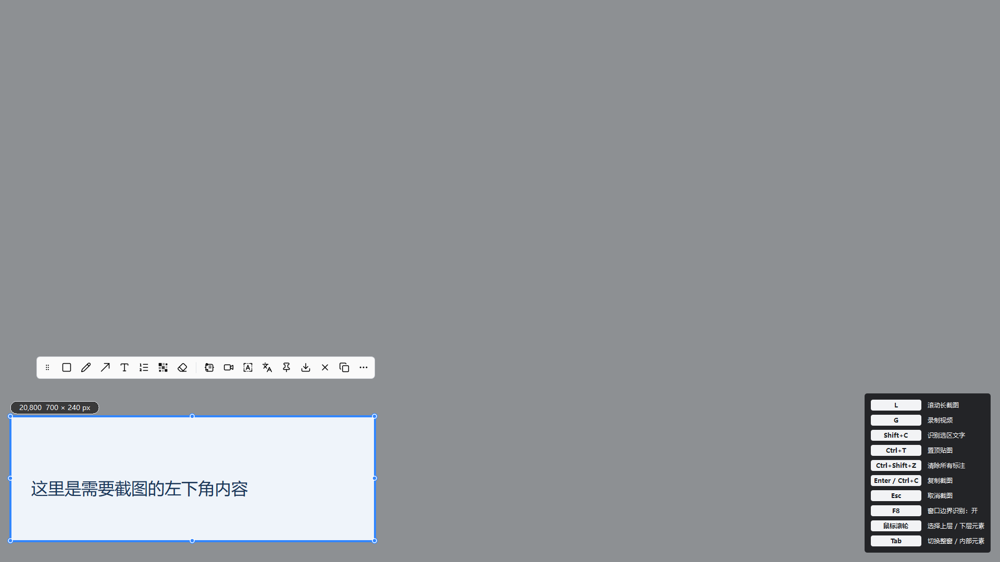
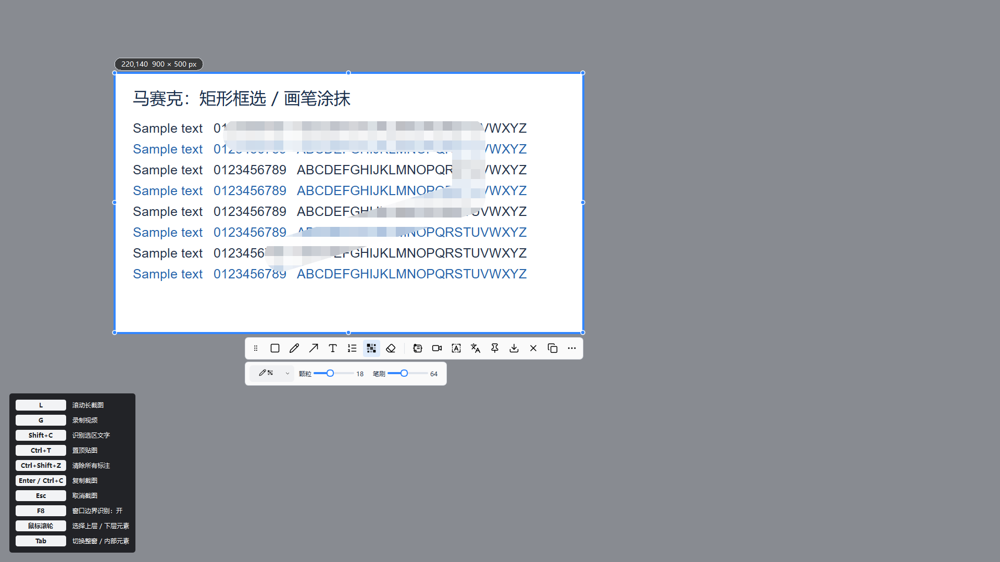

滚动长截图
按选区大小滚动拼接，支持纵向和横向长图，实时预览拼接结果。
轻截 LightSnip 是一款免登录的 Windows 截图软件。框选后即可标注、打码、提取文字、翻译截图文字或置顶贴图，也能沿指定区域滚动截取长图。

按选区大小滚动拼接，支持纵向和横向长图，实时预览拼接结果。
提取截图中的中英文文字，左边看图，右边直接编辑，识别不联网。
将截图钉在桌面，拖动、缩放、翻转或调整透明度，方便对照内容。
箭头、形状、文字、序号与画笔；马赛克支持框选和涂抹，可分别调节笔刷与颗粒。
提取文字后使用 MyMemory 在线翻译，在原文附近显示可复制的小浮层。
各显示器分别框选，自定义全局快捷键；另可录制选区内的静音 MP4。

是。项目代码采用 MIT 许可，提供源码和 Windows 绿色版。第三方库、OCR 模型和图标保留各自许可。
没有截图历史功能。直接复制的截图只放在剪贴板；主动保存图片或录屏时才生成相应文件。
OCR 在本机运行。翻译需要联网，会将识别出的文字发送到 MyMemory，并受其匿名免费额度及网络可用性限制；当前不提供离线翻译模型。
长截图需要足够的画面重叠，动态内容可能影响拼接。多屏支持逐屏选择，暂不支持跨屏拖选合并；录屏目前无音频。
可以。到 GitHub 查看源码、构建步骤和贡献说明，也欢迎报告可复现的问题。
LightSnip offers region capture, scrolling screenshots, local OCR, annotations, pinned images, mosaic brush, online text translation, multi-monitor capture and configurable hotkeys. Download the portable Windows build or explore the MIT-licensed source on GitHub.